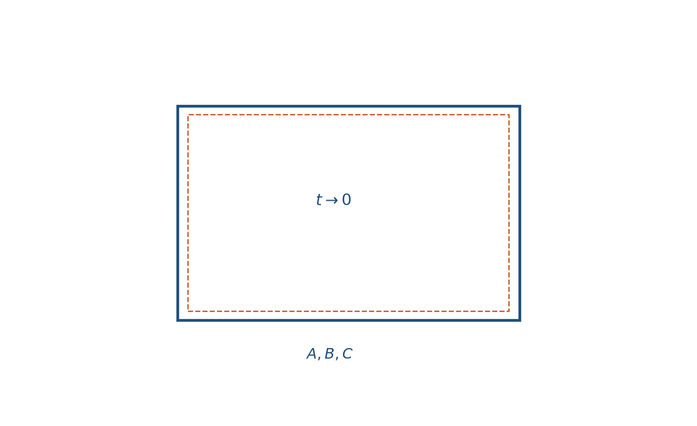
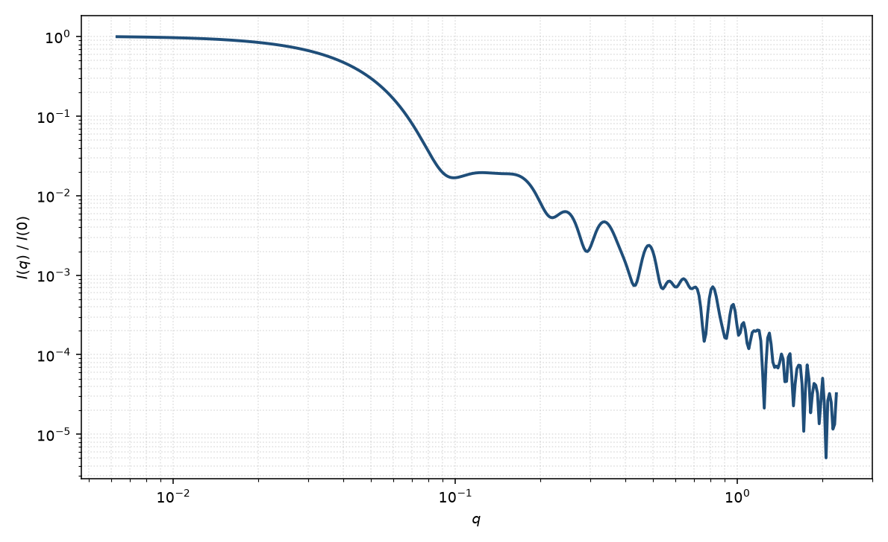

薄壁空心矩形棱柱
hollow rectangular prism (thin walls)
适用场景
空心矩形棱柱在壁厚 $t$ 远小于三边时的极限：散射由六个面（及棱）贡献，体积近似为表面积乘 $t$。适用于极薄纳米框、金属有机框架空壳、以及 $t$ 已小于分辨率所能分开的空心砖块。
若数据的 $q_{\max}$ 已能分辨壁厚振荡，应回到有限 $t$ 的空心矩形棱柱，而不是把薄壁模型硬拟合出虚假的 $t$。
物理图像
有限壁空心振幅对 $t$ 做一阶展开，得到六个矩形面的面积振幅之和（Nayuk 与 Huber 的薄壁写法）。$I(0)$ 正比于 $(\Delta\rho\, t\, S)^2$，其中 $S=2(AB+AC+BC)$ 是外表面积。高 $q$ 比实心砖块更接近面散射，Porod 区可更早出现。
本页示意图的 $I(q)$ 用很小的有限 $t$ 代入空心公式求值，以接近该极限，而不是另写一套与上节无关的定性曲线。
示意图


核心公式
有限壁空心振幅 $A(t)$ 在 $t\to 0$ 时
$$A(\mathbf{q})\simeq\Delta\rho\, t\sum_{\mathrm{faces}}S_f\,\mathrm{sinc}(\mathbf{q}\cdot\mathbf{a}_f/2)\,\mathrm{sinc}(\mathbf{q}\cdot\mathbf{b}_f/2)\,e^{i\mathbf{q}\cdot\mathbf{r}_f},$$其中 $S_f$ 是第 $f$ 个矩形面的面积。粉末平均后 $P(0)=1$。实际拟合中 $t$ 与 $\Delta\rho$ 只以乘积出现，须固定其一。
参数表
| 参数 | 符号 | 含义 | 单位 | 典型范围 |
|---|---|---|---|---|
| 外边长 | $A,B,C$ | 薄壁框的外轮廓 | Å 或 nm | 20–1500 Å |
| 壁厚乘衬度 | $\Delta\rho\, t$ | 薄壁极限下不可分的乘积 | Å$^{-1}$ 量级（视单位） | 由绝对强度约束 |
| 取向角 | $\theta,\phi$ | 框取向（二维） | 度 | 由取向分布约束 |
| 标度 / 本底 | $\mathrm{scale}$, $B$ | 前置因子与本底 | 与强度单位一致 | 实验相关 |
拟合注意
不要同时放开 $t$ 与 $\Delta\rho$。边长多分散会抹掉面干涉。若残差在高 $q$ 系统偏离，说明 $t$ 并非可忽略，应回到有限壁模型。
取向与磁性：薄磁壁的磁形式因子接近面散射；与核（空）通道完全不同。二维 $\theta,\phi$ 仍需要。
相近模型
参考文献
- Nayuk, R.; Huber, K. Formfactors of hollow and massive parallelepipeds and their application to SAXS. Z. Phys. Chem. 2012, 226, 837–854.